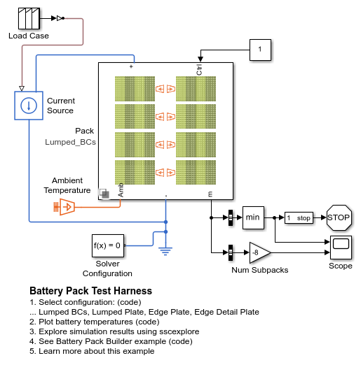
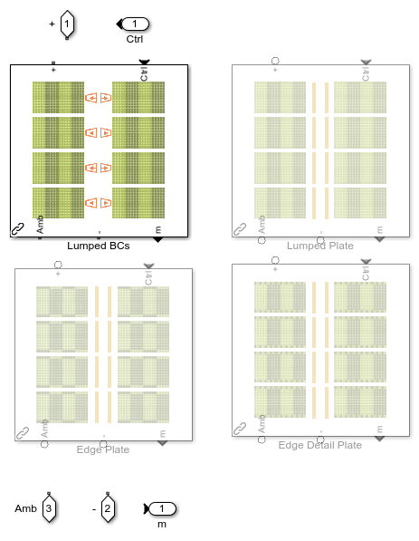
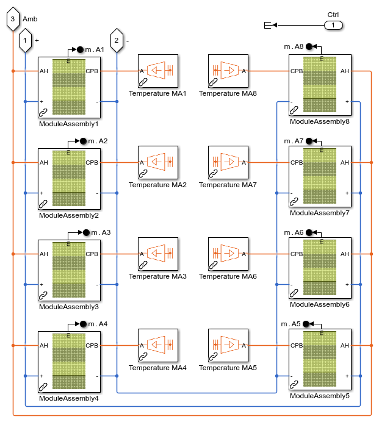
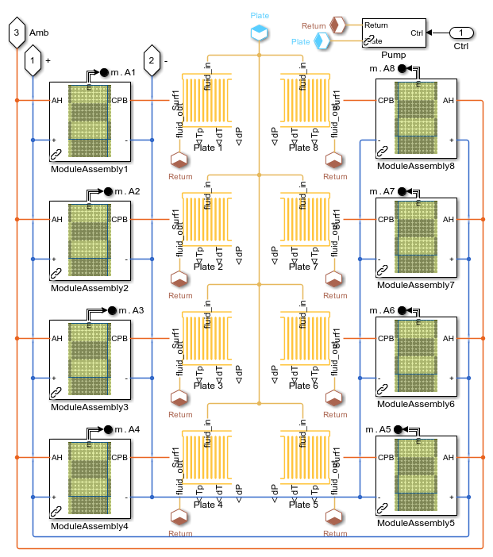
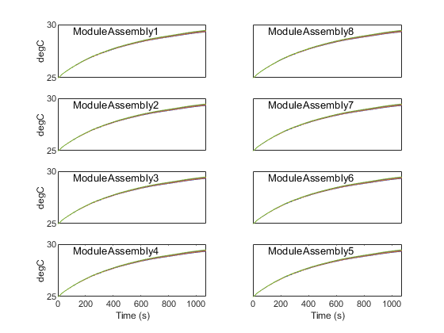
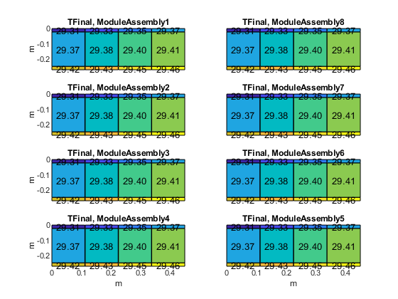
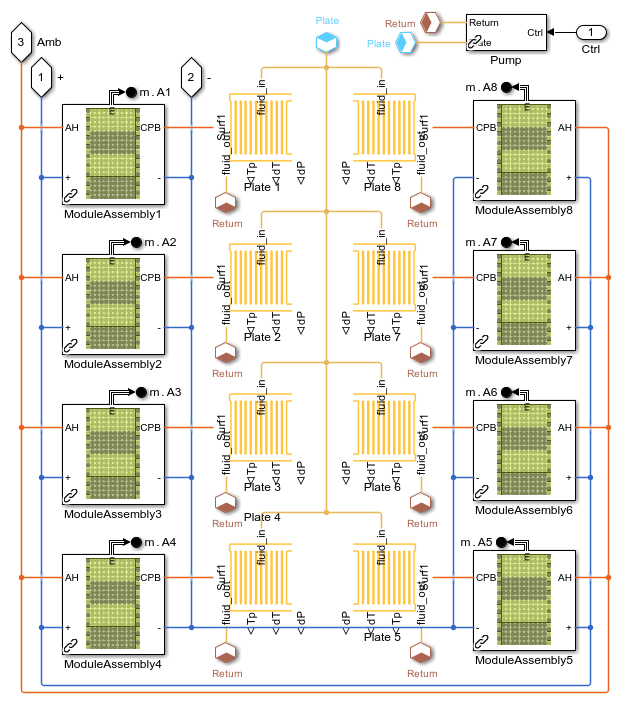
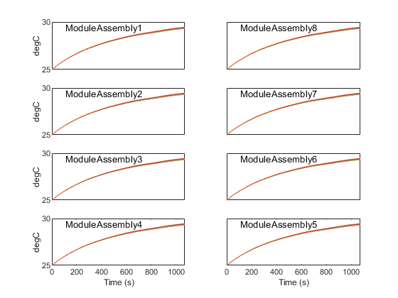
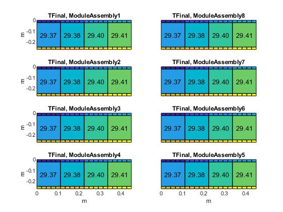

Battery Pack Test Harness
This example models a testrig for the entire battery energy storage system in an electric aircraft. It enables rapid exploration of the design of the battery and cooling system.
In this model, a load case for the battery is defined as the current drawn from the battery over time. The battery model can be configured to varying levels of granularity. The cooling plate can also be modeled at vary levels of fidelity and granularity.
Contents
Model
In this model, a load case for the battery is defined as the current drawn from the battery over time. The current draw is based on the current measured during a mission in the main model.
Pack Options
The battery model can be configured to varying levels of granularity. All cells in a module can be treated as if they have the same thermal conditions, or we can increase the number of cells with unique conditions, such as treating the cells on the edge of the module assembly uniquely as they have a larger surface area exposed to ambient via the pack housing.
The pack options also include the cooling system. Some options model the cooling system abstractly, treating the cooling system as a boundary condition. Others model the fluid flow through the cooling plate.
Simulation Results: Lumped Module Assembly, Boundary Conditions
This test configures the pack to assume a single set of thermal conditions for each module within the module assemblies, resulting in four conditions in each of the 8 sub packs. The 8 sub packs are connected electrically in parallel. The temperature gradient across the cooling plate is fixed. This configuration is used to determine the target inlet and outlet temperatures for the fluid in the cooling plates
The battery module assembly consists of four modules, each with a single thermal connection to ambient and an array of independent thermal connections to the cooling plate. The arrays of thermal connections to the cooling plate are assembled into a single array which is then connected to the cooling plate.
The thermal plate is modeled as a fixed temperature gradient along the flow path using Ideal Temperature Sources. If the maximum cell temperature is below the limit (for example, 45°C) and the maximum temperature difference between cells is below a limit (for example, 5°C), then a requirement temperature difference for the fluid entering and exiting the cooling plate has been identified.
The plots below show the results of a test using this configuration.
Simulation Results: Lumped Module Assembly, Cooling Plate
This test configures the pack to assume a single set of thermal conditions for each module within the module assemblies, so four conditions in each of the 8 sub packs. The 8 sub packs are connected electrically in parallel. The cooling system is modeled with fluid flowing through individual cooling plates for each sub pack. Parameters for the cooling system, such as cooling channel configuration and fluid flow rate, can be adjusted until the cells are within the target temperature range.
Simulation Results: Edge Module Assembly, Cooling Plate
This test configures the pack to assume individual thermal conditions for groups of cells at the edges of the module assembly. They are treated differently because they have a different surface area exposed to ambient conditions than the interior cells. The cooling system is modeled with fluid flowing through individual cooling plates for each sub pack. Parameters of the cooling system can be adjusted until the cell temperatures are within the required range.
  Simulation Results: Edge Detail Module Assembly, Cooling Plate
This test configures the pack to assume individual thermal conditions for each cells along the edges of the module assembly. This captures the unique situation of having more surface area exposed to ambient conditions than the interior cells, as well as the temperature gradient along the cooling channels. The cooling system is modeled with fluid flowing through individual cooling plates for each sub pack. Parameters of the cooling system can be adjusted until the cell temperatures are within the required range.
  